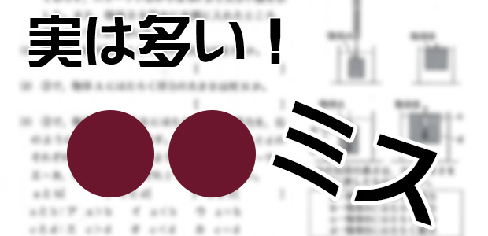
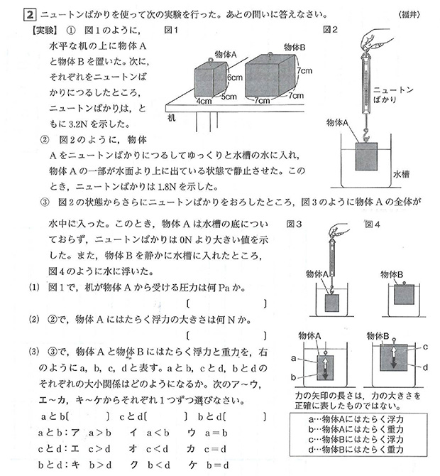
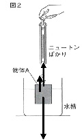

例えば最近こんなことが…
先日、中３理科の授業で扱うのによい題材はないかと探していたところ、某県公立高校の入試問題が目に留まりました。
いわゆる力学の問題で、物体を水中に沈めたときの‘浮力’の影響について考えなければならないものです。
「程よい難易度で設問もなかなかセンスがある。さすが公立の問題…え！？ これは…」
一瞬、目を見開きました。
変な問題だったのです。
ここで、具体的に何がどうおかしいのか、理解したい人のために必要な知識を少々。
（※ざっくりでよい人は読み飛ばして、次の小タイトルから読んで下さい）
「液体に物体を沈めたとき、その物体が押しのけた液体の重さ分だけ物体を浮かばせようとする浮力が生じる」
例えば、質量が200gで体積が300cm3の物体を水中に沈めてから手を放すと、「物体が押しのけた水が300 cm3（その水の重さは300g重）なので、上向きの浮力が300g重」そして下向きの重力が200g重なので、物体は沈まず浮かび上がる。
※発見に至るエピソードは有名なので調べてみて下さい。

ちなみに、私たちの世代では力や重さの単位は「g重（グラムじゅう）」でしたが、今は国際単位系に統一されていて、中学校の教科書では「100g重＝1N（ニュートン）」として扱っています。
で、問題になるのが(2)です。
②の条件からニュートンばかりの値が1.8Nなので、物体Aにかかる力は次の３つになります。
「下向きの重力…3.2N」
「ニュートンばかりが物体Aを上に引く力…1.8N」
「水による上向きの浮力…？N」

図のように上向きの力２つの合計が、下向きの重力とつり合っているはずですから、浮力の値は3.2－1.8＝「1.4N」が答えになります。しかし、何かがおかしい…。
その違和感の原因は物体Aそのものにありました。
問題文の最初に戻って図を見て下さい。
そして物体Aの体積を計算してみましょう。
4cm×5cm×6cm＝120 cm3です。
ということはですよ？
アルキメデスの原理から言うと、物体Aが全部水につかっているときで浮力は120g重（＝1.2N）、そして水から引き上げられるにつれて浮力は小さくなるわけです（押しのける水の量が減るため）。
浮力がどんなに大きくても1.2Nだというのに、問題の条件では1.4Nってどういうこと…？？
微妙なレベルの出題ミスはコワイ
はい、これが俗に言う‘出題ミス’というやつです。
まぁでも、なんと言ったらよいか微妙なんですよね。
つまり、状況的にはあり得ないんですけど、(2)の問題の答えを出す手順そのものに影響はしないので、とりあえず‘答えらしきもの’は出てしまうという。
こういうの、すんごくやっかいです。
なぜなら、誰がどう見ても明らかな出題ミスと言い切りづらいから。
もし、「選択肢に正解がない」とか「条件が少なすぎて解けない」など、明らかな出題ミスであったらどうでしょう。
気づいた誰かがあとから指摘して、発覚する可能性が高いです。
その場合、「一律全員に得点を与える」などの措置をとるのが普通です。
無かったことにするわけですから、一応は公平感があります。
ところが先ほどの問題などは、気づかれない、または気づいた人がいたとしても「厳密にいえばおかしいけど一応答えは出るし、誰も文句言ってないし…」という感じで埋もれてしまう可能性があります。
現にこの問題は某問題集に掲載されていたもので、その時点で出版社も気づいていない可能性が高い。
さらに私なりにネットで出題ミスについて検索してみました（中学入試から大学入試までわんさかありました…）が、この問題についてはとうとう見つけられませんでした。ちなみに同県の別の年の理科出題ミスについてはヒットしました。
まさかとは思いますが、この件について気づいているのが私だけとか…（苦笑）。
で、何がやっかいなのか。
それはですね、「深く考える力がある子ほど混乱してしまう」ということなんです。
まぁこれぐらいの問題の場合は「あ、おかしいけど1.4Nでいいだろう」とすることはできますが、問題が悪いのに自分の側に勘違いがあるのかと思ってしまい、挙句の果てに違う答えにしてしまうかもしれません。
そして、誰も出題ミスに気付かないので、多くの子が得点をもらい、深く考えたその子が×をくらうという…（恐）。
イカン！と言うのは簡単だが…
前述した通り、これを機に出題ミスを調べてみましたが、思っていた以上に多いですね。
でもありうる話です。
だって、近隣の私立高校の入試でも、「試験中に訂正が入った」って生徒がよく言いますもん。
きっと印刷した後に気づいたんでしょうね。
それから意外とセンター試験や国公立の高校や大学の試験にも出題ミスがあるんですね。
ミスと言っても様々で、‘問題の言い回しが適切でない’とか‘出題範囲そのものにミスがある’といったものまであります。
そして、もっともオモテに出にくい「採点ミス」というものまで含めて考えると、厳正だと信じて疑わなかった‘試験’というものが、意外と怪しいモノに見えてくるかもしれません。
いずれにしても、子どもたちのその後数年間を左右する入試ですから、慎重に慎重を期してもらわないと困ります。ミスはイカン！
…って言うのはその通りだし簡単なんですけどね。
まぁ教育業界に身を置くものとしては、正直なところ「そりゃ多少はあるよ…」という気持ちになるのも事実です。
入試問題自体、一から作るわけですし、どのような力のある子を選抜したいかということが明確であればあるほど、オリジナリティのある問題を作ろうと手間がかかります。
そこらの問題集でよく見かけるような‘あるあるパターン’の問題ではプライドが許さないだろうし（多分…）、「あの学校の入試問題、パクリばっかりだよ」なんてことを言われちゃいますからね。
で、頑張って作った良問が複数の人間のチェックにより精査されるわけですが、思いもよらないところで矛盾があったり…まさに先ほどの理科の問題のような状況はありうるだろなと、自分で頻繁に問題作成をしている私にとっては、‘わかる’現象なんです。
自分自身、「なかなかいい問題が出来たぞ」と思って生徒にやらせたときに、生徒の考え方を聞いて「あ、確かにそういう視点もあったか。じゃあそれも正解だ」と気付くことがあります。
そんなときには純粋に自分も感心して「キミのおかげでこの問題、もっと深いものになったよ」なんて、むしろ良い展開になるのは授業だから。
入試では出題者側のミス扱いになります。
ときどき、ニュースなどで、「○○大学が１年前の入試で採点ミスがあり謝罪。追加合格にすると発表」などと聞くと、受験生を気の毒に思うのと同時に、学校側に「よくぞ隠さず明らかにした」と思わずにはいられません（褒められたことではないですが）。
人間のやることですから、完璧にはならないのです。
それが現実。
これは個人的見解ですが
じゃあ、そういうミスという不運に見舞われたらどうしようもないのか。
どうしようもないですね（汗）。
でも、不運に遭う確率を下げることは可能だと個人的には思います。
例えば採点ミスを防ぐこと。その方法を少し言うと…
①解答は丁寧に書く
なにを当たり前のことを…と思うなかれ。
今の子はずる賢くないのか、テストでも平気で雑に書いてくる（苦笑）。
私などは普段きたなく書いていても、テストのときだけは超丁寧でした（笑）。
採点する立場になるとわかるのですが、丁寧な答案は採点者も慎重に見るものなんです。やはり誠意が感じられますからね。
逆に雑に書いてある答案は、それだけで見る気がなくなります。特に何百人何千人と受ける入試なら、雑な答案はそれだけで見ないと豪語していた先生もいます。
②ミスさせない工夫をする
これ、誰に教わったわけでなく自分は絶対に実践していたことです。
例えば、記号選択問題で「当てはまるもの全てを書きなさい」というものがあります。
仮に正解を‘ア，ウ，オ’だとします。
だとしたら、私は絶対にこの「アウオ」の順番に書きます。
こういった問題は、順番は関係なく、選んだものが合っていれば正解になりますが、よく考えて下さい。
採点者は模範解答を見ながら採点しているはず。
その模範解答ではどのような順番になっているだろうか？
間違いなく「五十音順」や「数字の小さい順」に並んでいるでしょう。
ならば、たとえ正しい答えでも、それと違う順番に書いてしまうと、パッと見て間違えていると誤解されてしまうかもしれない。なにしろ大量に採点して疲れているわけですし…。
そういうふうに、「相手にいかにミスをさせないか」ということを考えることは、本来の入試の主旨と違うように感じるかもしれませんが、そういう配慮や想像力も含めて‘学力試験’だと私は考えています。
③不運が起こっても受かる実力をつける
これが最強でしょう。
５０点分ぐらい間違って低く点数をつけられても受かる力をつけてしまえばよいではないですか。
大きくいきましょう、大きく！
というわけで、まだ入試の最終戦が残っています。
受験生の皆さん、力を出し切って！